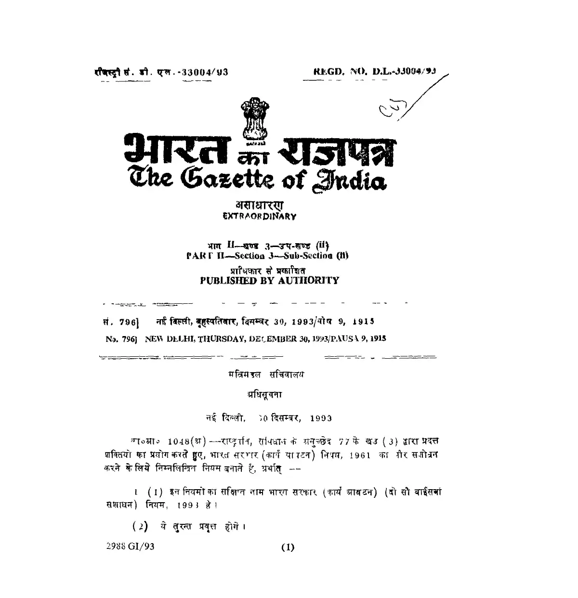
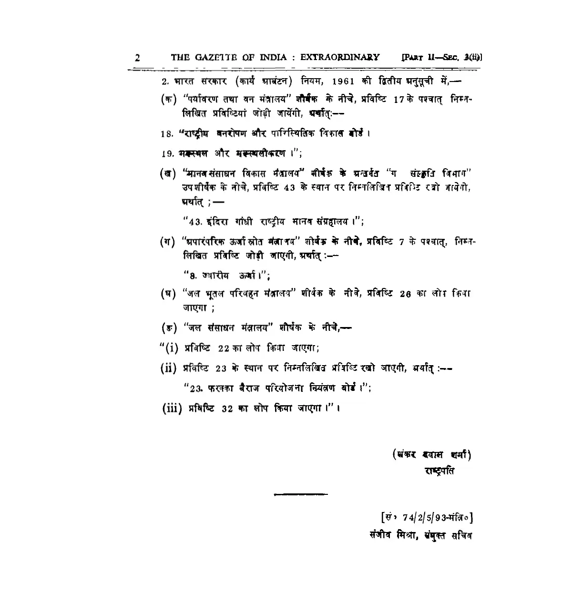
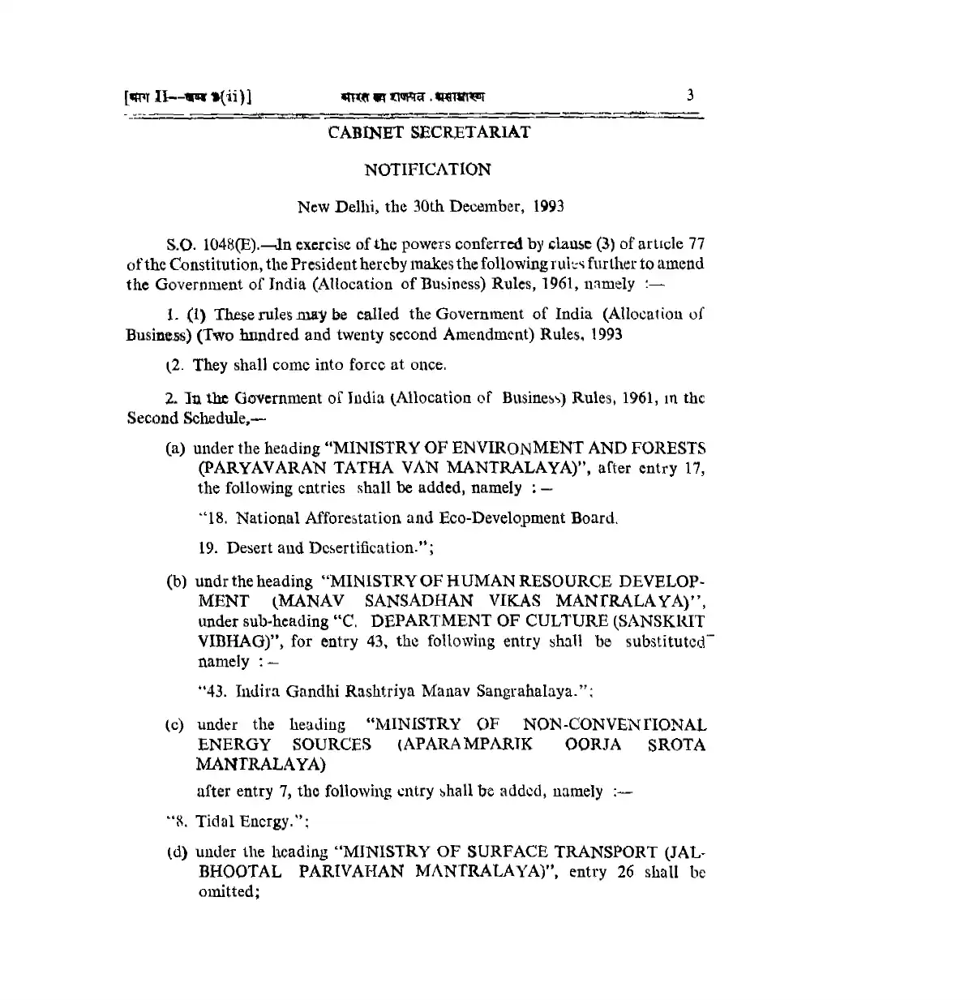
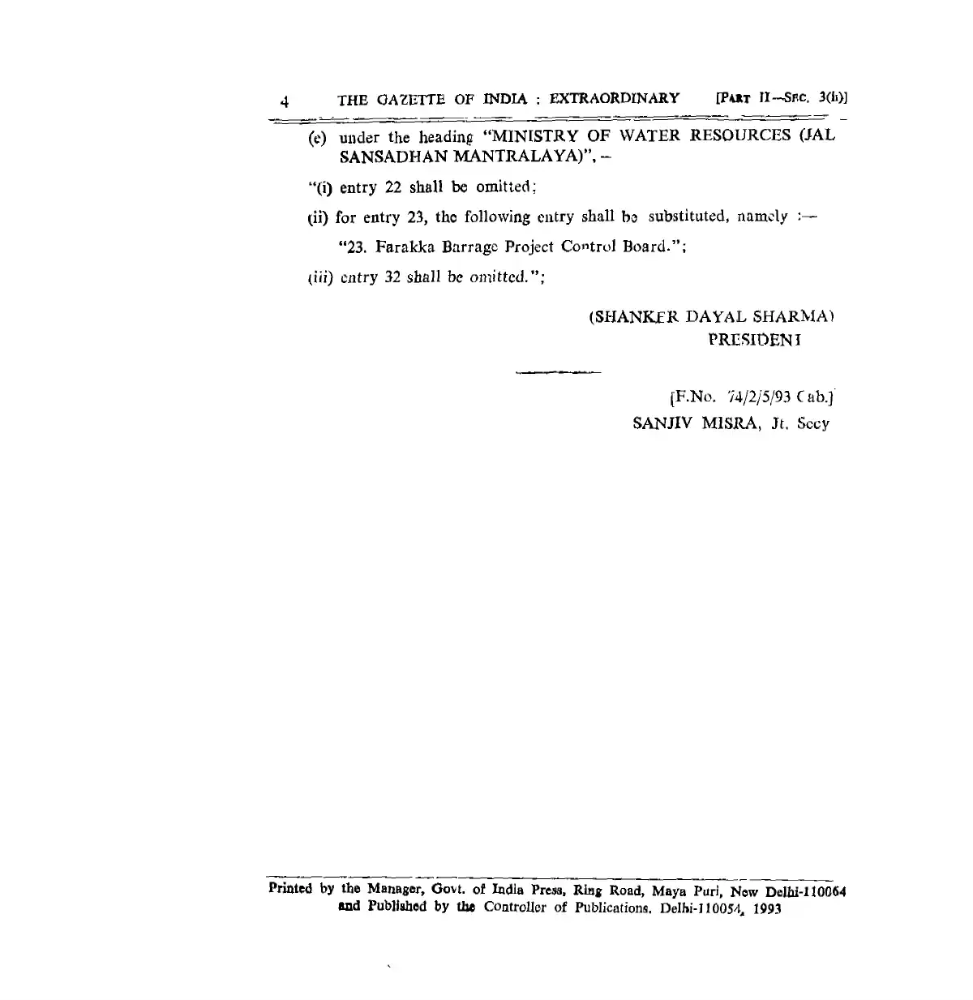

Amendment #222 (S.O. 1048(E), 1993)
7 changes: 0 to the First Schedule, 7 to the Second Schedule. 7 applied
The order, page by page
Page 1 of 4

Page 2 of 4

Page 3 of 4

1234after Schedule 2 › MINISTRY OF ENVIRONMENT AND FORESTS › entry 17
- 18. National Afforestation and Eco-Development Board.
- 19. Desert and Desertification.
applied at schedule 2 › ministry MINISTRY OF ENVIRONMENT AND FORESTS › entry 18 in the Rules after #222
Schedule 2 › MINISTRY OF HUMAN RESOURCE DEVELOPMENT › DEPARTMENT OF CULTURE › entry 43
- 43. Indira Gandhi Rashtriya Manav Sangrahalaya.
applied at schedule 2 › ministry MINISTRY OF HUMAN RESOURCE DEVELOP- MENT › department D › entry 43 in the Rules after #222
after Schedule 2 › MINISTRY OF NON-CONVENTIONAL ENERGY SOURCES › entry 7
- 8. Tidal Energy.
applied at schedule 2 › ministry MINISTRY OF NON-CONVENTIONAL ENERGY SOURCES (APARAM- PARIK OORJA SROTA MANTRA- LAYA) › entry 8 in the Rules after #222
Schedule 2 › MINISTRY OF SURFACE TRANSPORT › entry 26
applied at schedule 2 › ministry Ministry of Surface Transport › group_heading IV › entry 26 in the Rules after #222
Page 4 of 4

567Schedule 2 › MINISTRY OF WATER RESOURCES › entry 22
applied at schedule 2 › ministry MINISTRY OF WATER RESOURCES › group_heading I › entry 22 in the Rules after #222
Schedule 2 › MINISTRY OF WATER RESOURCES › entry 23
- 23. Farakka Barrage Project Control Board.
applied at schedule 2 › ministry MINISTRY OF WATER RESOURCES › group_heading I › entry 23 in the Rules after #222
Schedule 2 › MINISTRY OF WATER RESOURCES › entry 32
applied at schedule 2 › ministry MINISTRY OF WATER RESOURCES › group_heading I › entry 32 in the Rules after #222
How this document was read
From the Government of India (Allocation of Business) Rules, 1961 and their amendments, as published by the Cabinet Secretariat (cabsec.gov.in), read by orgpedia. The readings of the older scanned gazettes have known gaps.